Every craftbook
Craftbooks are step-by-step plans your crew follows to produce a real piece of work. Each one names its steps, who runs them, and the checks the result must pass. There are 287 of them, grouped here by the kind of work they do.
Code · Build & features
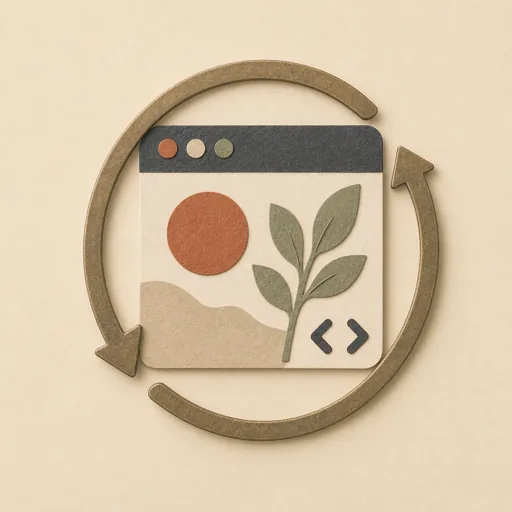
Animated SVG / CSS HeroBuild a single-file animated SVG or CSS hero section — a looping illustrated scene, an animated logo, or a…- Auth / Session ImplementationImplement an authentication and session flow — login, session/token issuance, verification, and logout — with…
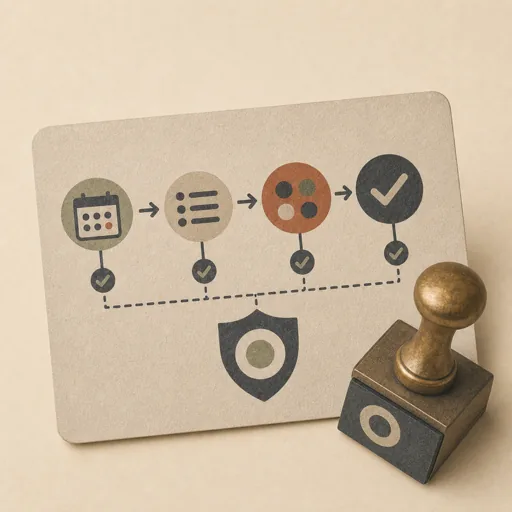
Automate a Booking or Checkout FlowAutomate a multi-step booking, reservation, or checkout flow end-to-end — select, fill details, choose…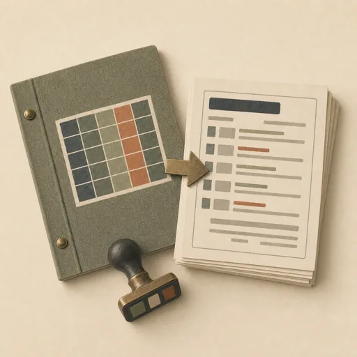
Batch-Fill Forms from a DatasetAutomate filling a web or PDF form once per row of an input dataset — registrations, applications, data-entry…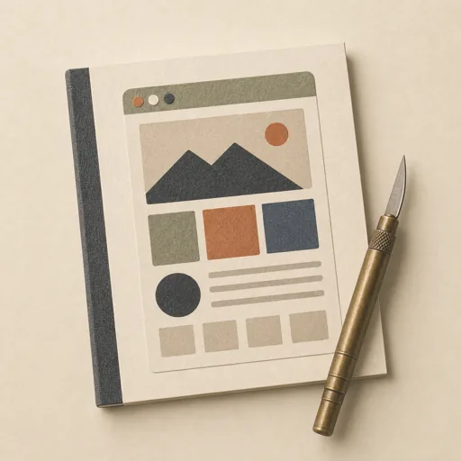
Branding WebsiteBuild a small brand/marketing website where the visual identity leads.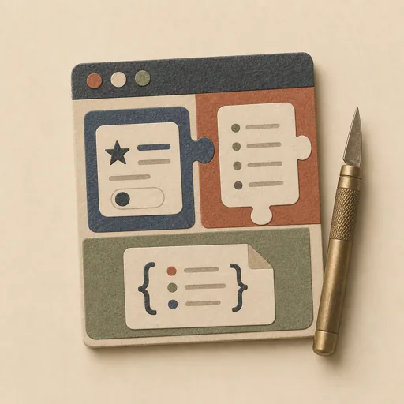
Browser ExtensionBuild a Manifest V3 browser extension scaffold — a popup, a content script, and the manifest — that does one…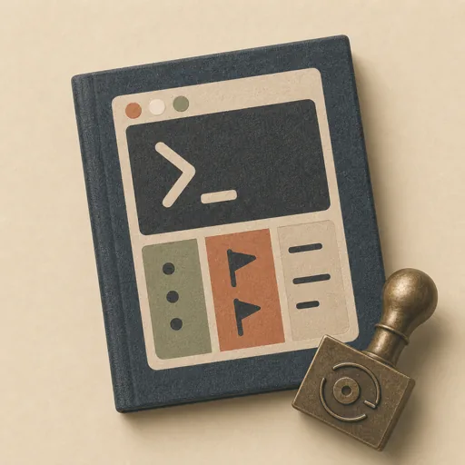
Command-Line ToolBuild a command-line tool with subcommands, flags, arguments, help text, and proper exit codes.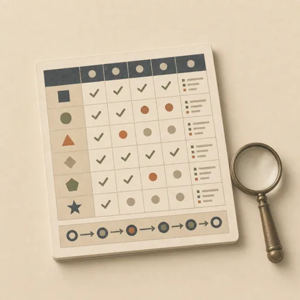
Compatibility CheckAnswer 'does it still work on the new version?' with a matrix, not a shrug: the datapack's files checked…- CRUD Web AppBuild a small single-file CRUD web app — a todo list, notes, contacts, or inventory manager — with create…
- Data Visualization ExplorerBuild a single interactive chart or data explorer page — bar, line, scatter, or pie — driven by sample or…
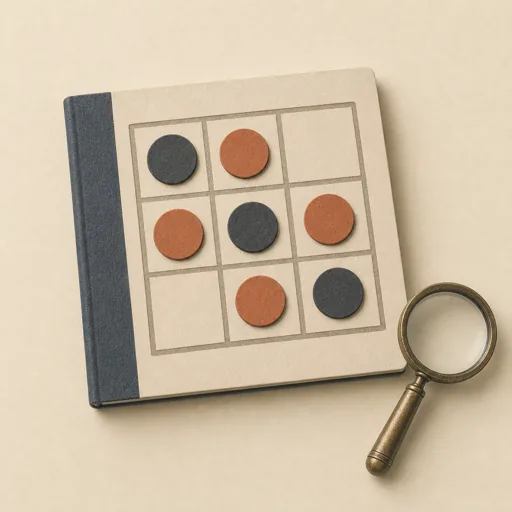
Digital Board GameBuild a single-file web version of a turn-based board game such as tic-tac-toe, checkers, connect-four…- Embeddable Feedback WidgetBuild a single-file embeddable feedback, contact, or rating widget — a floating button that opens a small…
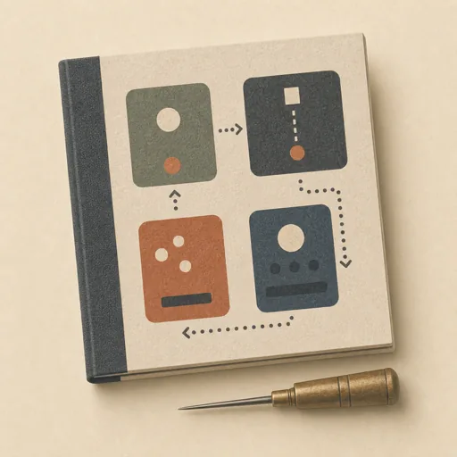
Full Game with Title & Game-Over ScreensBuild a complete single-file HTML game with the full screen flow — a title/start screen, the gameplay screen…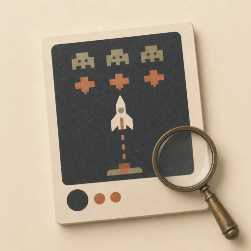
HTML Arcade GameBuild a playable single-file HTML/canvas arcade game (shooter, runner, dodger, etc.).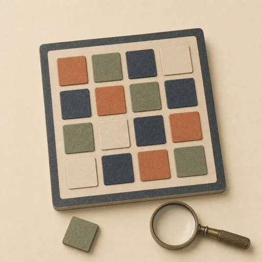
HTML Puzzle GameBuild a single-file HTML logic or puzzle game such as a match-3, sliding tile, Sokoban, 2048, minesweeper, or…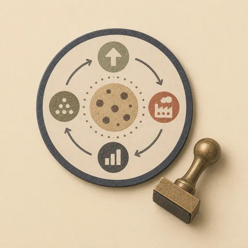
Idle / Incremental GameBuild a single-file idle or incremental clicker game such as a cookie/factory clicker with upgrades…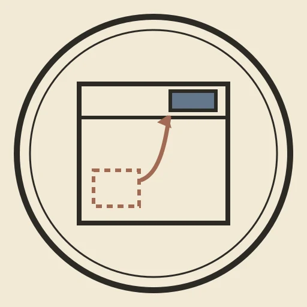
Implement a UX ChangeDeliver a described UX change the disciplined way: capture the before state from the real markup, make the…- Installable Offline PWABuild an installable Progressive Web App that works offline — an HTML app shell, a web app manifest, and a…
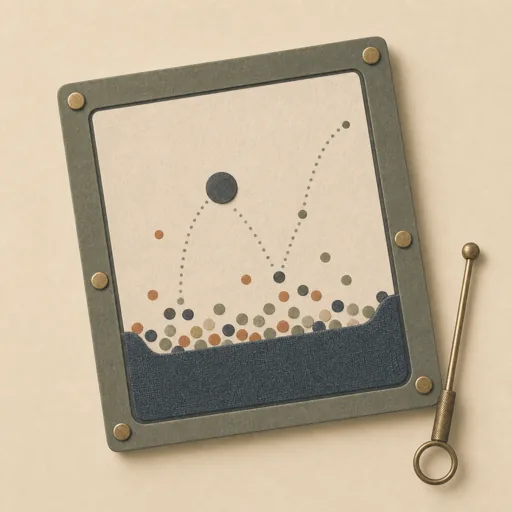
Interactive Physics ToyBuild a single-file interactive canvas physics or particle toy such as a bouncing-ball sandbox, gravity…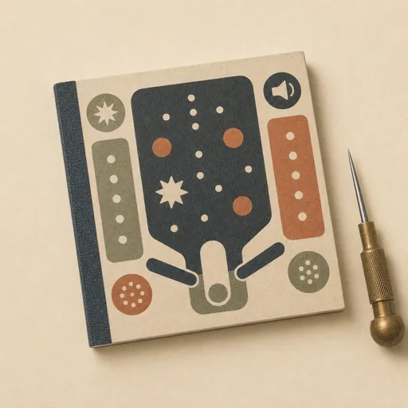
Juice PassMake the game feel alive without breaking it: feedback on every player action — hit-flash, screenshake, sound…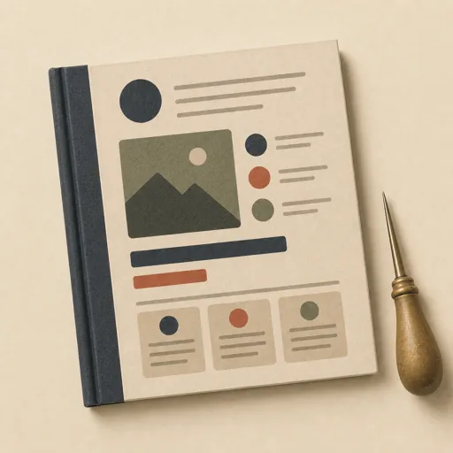
Landing PageBuild a single high-conversion landing page for one offer — a product, signup, waitlist, or download — with a…- Metrics / Admin DashboardBuild a single-page metrics or admin dashboard with KPI summary cards, at least one chart, and a data table…
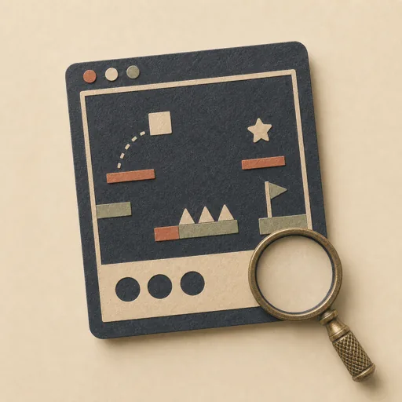
Micro Game JamBuild a tiny, complete, themed micro-game from a one-word or one-line prompt — a 60-second arcade or…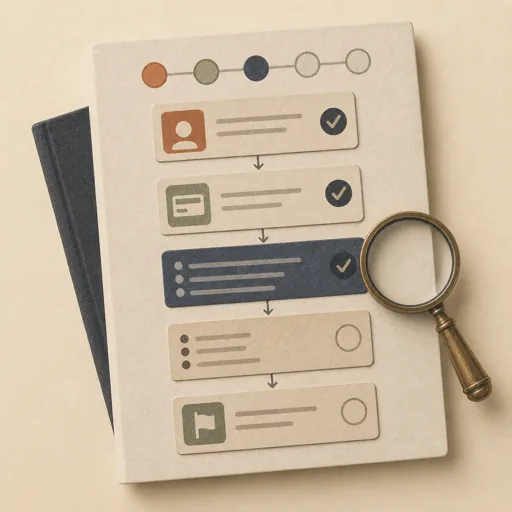
Multi-Step Form WizardBuild a single-file multi-step form wizard — a signup, checkout, survey, or onboarding form split across…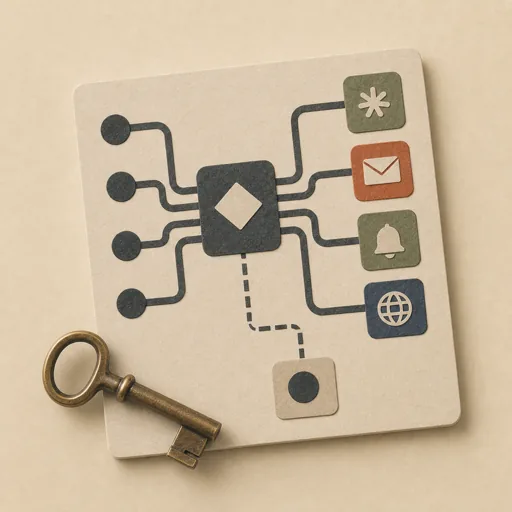
Notification RouterBuild an event-to-channel notification router: a small module that takes incoming events and routes each to…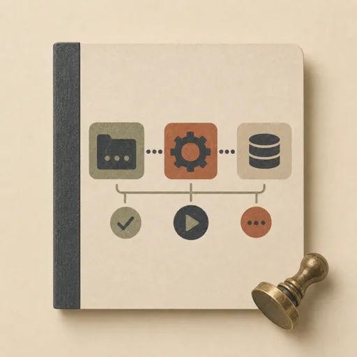
One-Off Automation ScriptWrite a one-off automation script that reliably does a repetitive task — process files, call an API…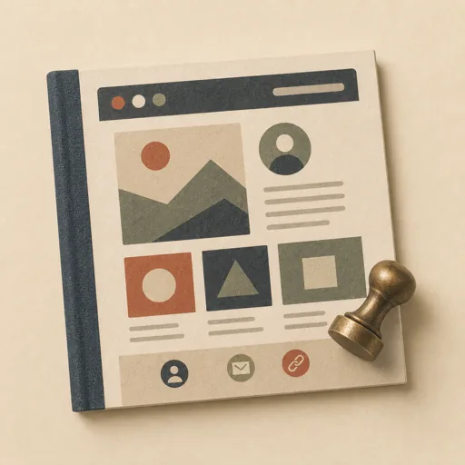
Portfolio SiteBuild a personal or professional portfolio site that showcases projects, an about/bio, and contact links in a…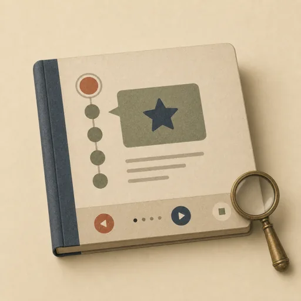
Product Onboarding TourBuild a single-file product onboarding tour or coachmark walkthrough that guides a new user through key…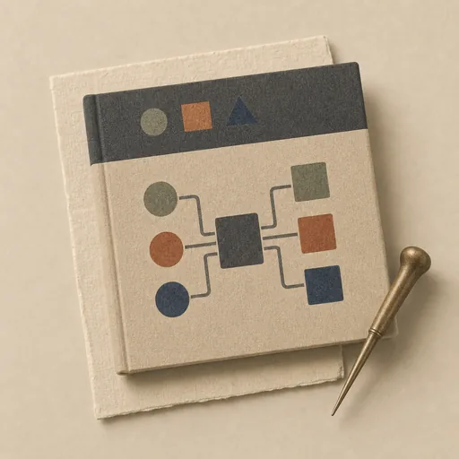
Project Config ScaffoldBootstrap a project's configuration — the tooling, linter, formatter, tsconfig/compiler, scripts, and ignore…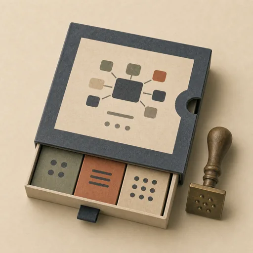
Reusable Library PackageBuild a reusable library/SDK with a clean public API surface, sensible defaults, and published documentation.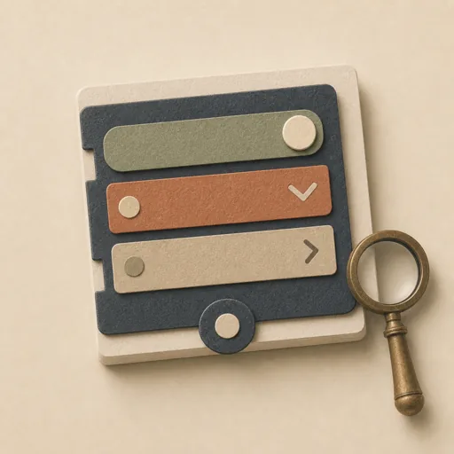
Reusable Web ComponentBuild a reusable custom element as a standards-based Web Component — a rating widget, toggle, accordion…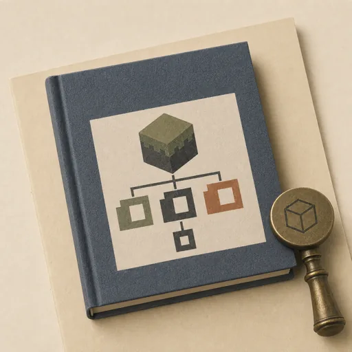
Scaffold a ModStart the mod right: a correctly-shaped Minecraft datapack — pack.mcmeta carrying the right format number for…
Code · Testing & fixes
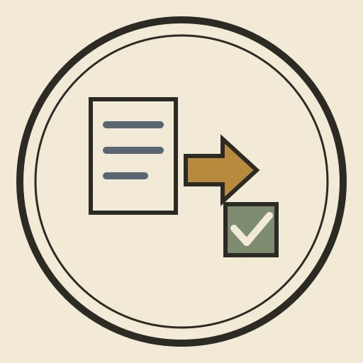
Apply Review FindingsTake an existing review's findings and close them for real: triage each one against the current code, fix the…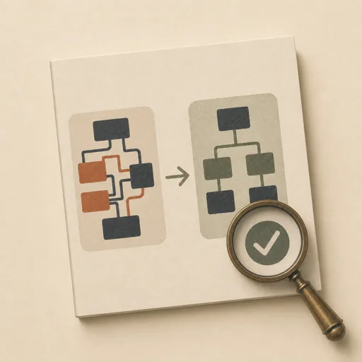
Behavior-Preserving RefactorRestructure code without changing what it does, with proof at every stage: a green suite recorded before…- Browser QA AuditExercise a running app in a real browser, triage what breaks, and produce a report-only QA findings list with…
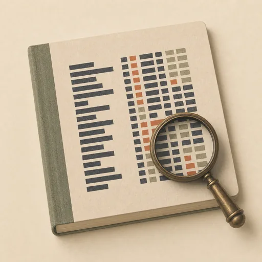
Codebase Refactoring ReviewReview an entire codebase for the least cogent, highest-leverage refactoring opportunities without changing…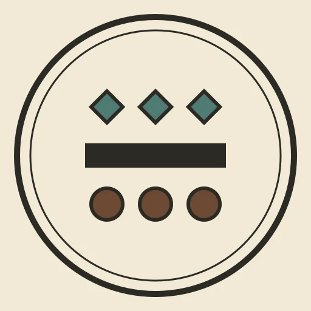
Codemod SweepMake a mechanical change everywhere it applies - a rename, an API-call migration, dead-code removal…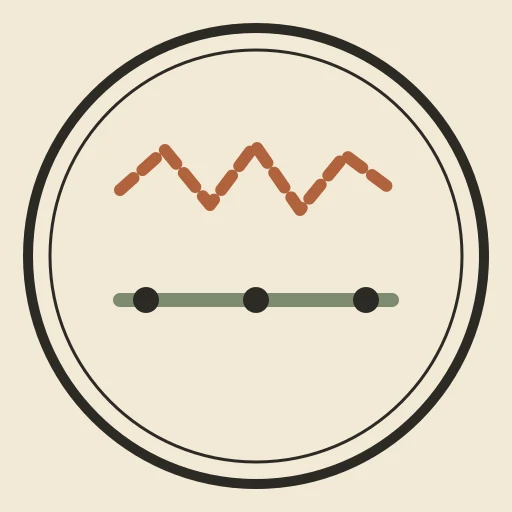
Fix a Flaky TestHunt down an intermittently failing test and make it deterministic: reproduce the flake with real recorded…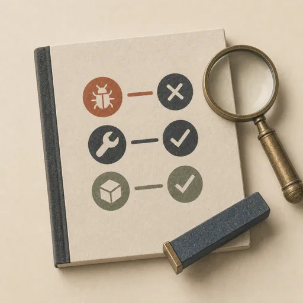
Hotfix FlowStop a live failure with the smallest change that fixes it at the real site: reproduce with the least…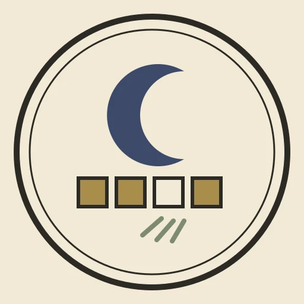
Nightly Fix SweepTurn a night's open code findings into reviewable change proposals: triage the leads, cluster what belongs…- Performance AuditAudit an application or page for performance problems with measurements, then produce a report of the…
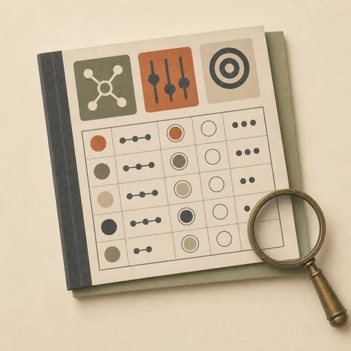
Playtest ReportPlaytest like it matters: a structured pass over the mechanics, the edge inputs, and the score loop, every…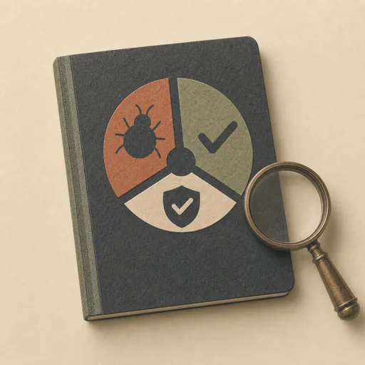
Reproduce-Then-Fix a BugFix a bug the disciplined way, with proof at every step: a failing test that reproduces it (verified red by a…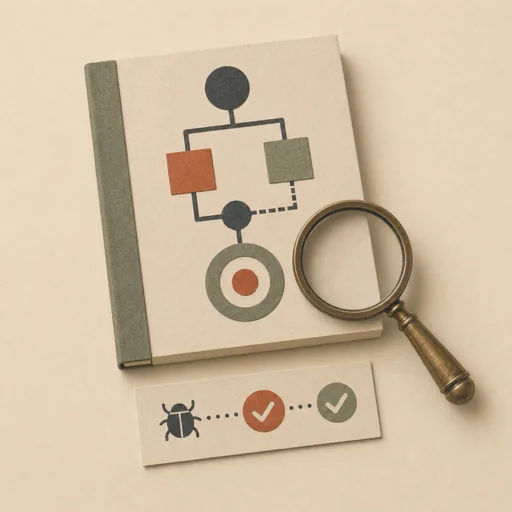
Root-Cause InvestigationDebug systematically: reproduce the failure and find the true root cause before changing any code, then fix…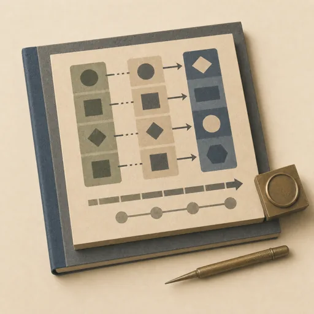
Schema / Type MigrationMigrate a schema or data shape with the expand/contract discipline: reads accept both shapes while the data…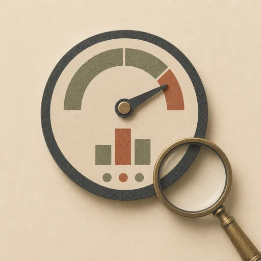
Targeted Performance FixMake a measured, targeted performance improvement: baseline numbers recorded with their method before…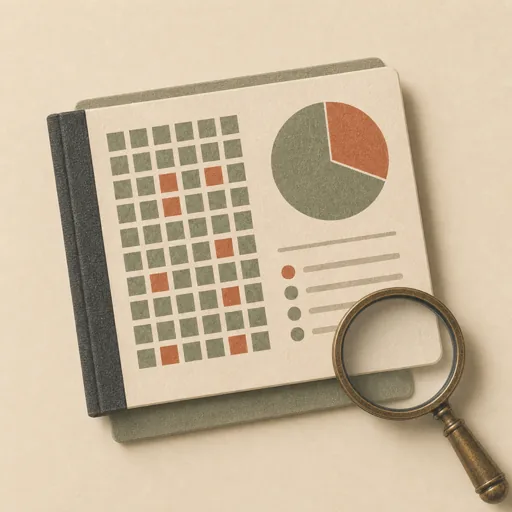
Test Coverage ReviewReview a codebase or module's test suite for real coverage and quality, then produce a gap report and a…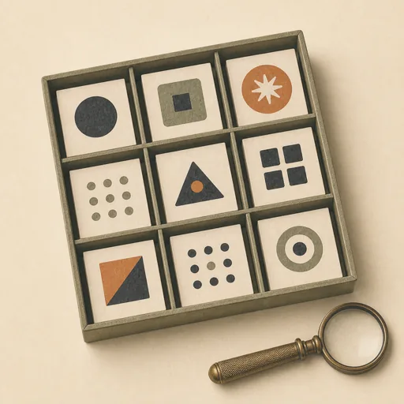
Test Suite BackfillAdd tests that actually bite to untested code: rank the untested behavior by breakage cost, write tests in…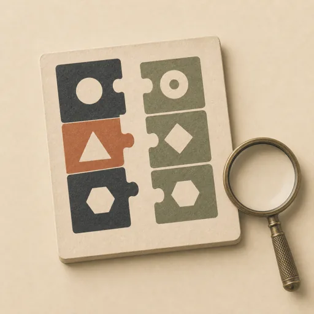
Type-Safety PassTighten a module against unsafe patterns — loose equality, implicit coercions, swallowed catches, untyped…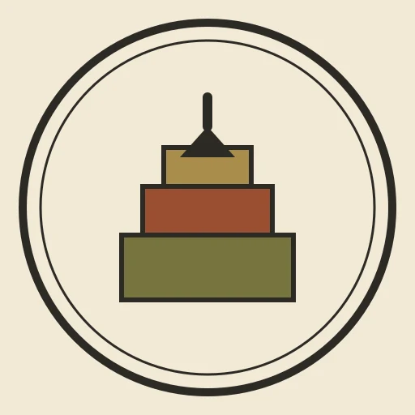
Upgrade a DependencyUpgrade dependencies in reviewable stages with proof at every step: a green suite before any bump…
Code · Review & security
- Accessibility AuditAudit a web page or UI for accessibility against WCAG 2.1 AA and produce a prioritized remediation report.
- Accessibility RetrofitAudit real pages for concrete accessibility violations — alt text, labels, heading order, keyboard and focus…
 Code ReviewSnapshot-driven code review.
Code ReviewSnapshot-driven code review.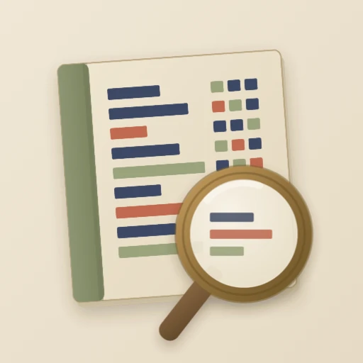
Comprehensive Codebase ReviewThe definitive deep, consultant-level review of an entire codebase and its architecture.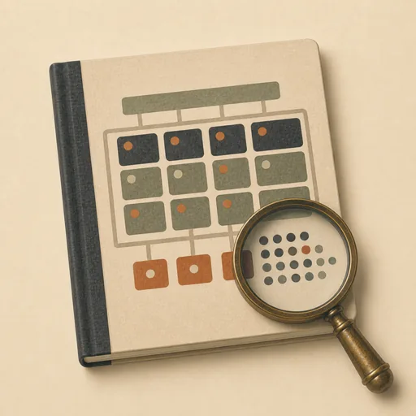
Deep Security ReviewRun a slow, thorough, WHOLE-CODEBASE security audit that looks for SYSTEMIC weaknesses — a vulnerability…- Dependency AuditAudit a project's dependencies for security, staleness, license, and maintenance risk, then produce a…
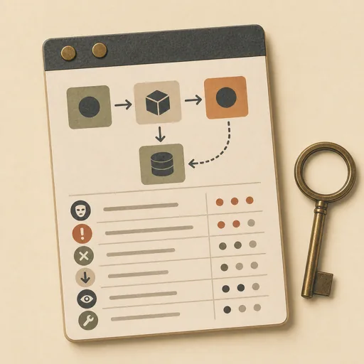
Lightweight Threat ModelProduce a lightweight threat model for a feature or system using a structured method (STRIDE over a simple…- Pull Request ReviewStaff-engineer-style PR review over a complete local PR corpus.
- Security Architecture ReviewA structured security architecture review: walk the stack for secrets, dependencies, auth, and common…
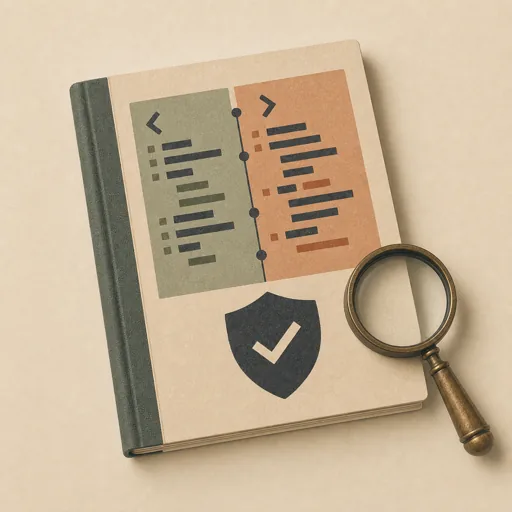
Security Review of a DiffPerform a focused security review of a code change or diff and produce a vulnerability report mapped to a…
Code · APIs & data
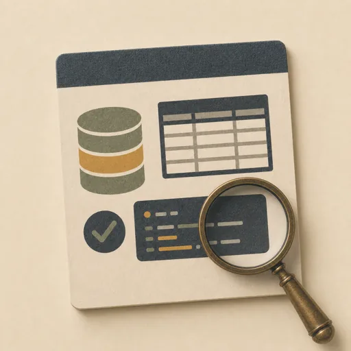
Answer a Question with SQLAnswer a specific business question against a database or table set with a correct, readable SQL query and a…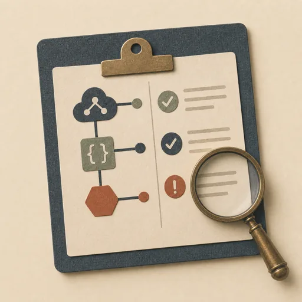
API Contract ReviewReview an API contract or specification (OpenAPI/REST/GraphQL) for correctness, consistency, and developer…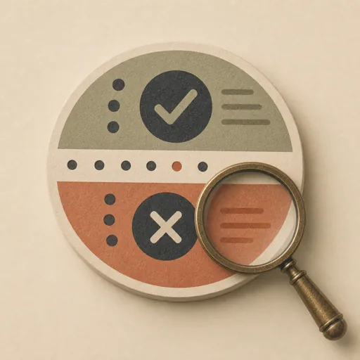
Build + Test a Tricky RegexBuild a regular expression that matches exactly the right strings and rejects the wrong ones — specified with…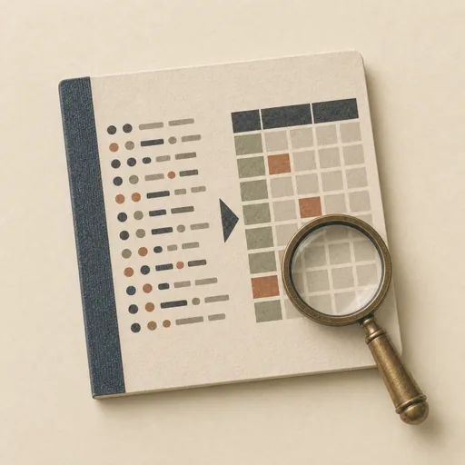
Clean a DatasetProfile, clean, and validate a messy CSV/TSV/JSON dataset into an analysis-ready table.- CSV / Tabular TransformerReshape and convert tabular data from one schema to another: rename and reorder columns, split or merge…
- Data DictionaryDocument a dataset's schema as a clear, complete data dictionary so others can use it without guessing.
- Data Quality AuditAudit a dataset against explicit data-quality rules and produce a scorecard of where it passes and fails…
- Diagnose + Add Database IndexesDiagnose slow database queries and add the right indexes — driven by the query plan, not by hunches — then…
- ETL / Ingest PipelineBuild an extract-transform-load pipeline that ingests source data, reshapes it to a target schema, and loads…
- GraphQL APIBuild a GraphQL API with a typed schema (SDL), resolvers, queries, mutations, and input validation.
- gRPC ServiceBuild a gRPC service from a Protocol Buffers contract — define the .proto service and messages, implement the…
- Inbound Webhook HandlerBuild a handler that receives inbound webhook events, verifies their authenticity, parses the payload, and…
- Join / Merge Two DatasetsCombine two datasets into one reconciled table on a shared key, correctly handling the join type, key…
- Message Queue Consumer / WorkerBuild a queue consumer/worker that pulls messages off a queue, processes them reliably, and handles failures…
- Migrate Data Between ToolsMigrate records from a source tool/format to a destination tool/format — CRM to CRM, spreadsheet to app, JSON…
- Model a Flow as a State MachineModel a stateful flow (checkout, order lifecycle, connection, wizard) as an explicit finite state machine…
- Parser / DSL for a Small GrammarBuild a parser for a small domain-specific language or data format — tokenize, parse to an AST, and report…
- REST API ServiceBuild a RESTful HTTP API service with resource endpoints, JSON request/response bodies, status codes…
- Scrape a Site to Structured DataTurn one or more web pages into a clean, structured dataset (JSON or CSV) with a fixed schema — product…
- Typed SDK Wrapper for an External APIWrap a third-party HTTP API as a clean, typed client library — studying the real API surface first so the…
Code · Release & deploy
- Artifact Integrity & Ship ReviewPerform an isolated ship-readiness review of the actual built artifacts of a project—sites, npm packages…
- CI Pipeline from ScratchAuthor a CI pipeline grounded in what the repo actually has: inventory the real package scripts, write the…
- Containerize a ServiceContainerize an application with a production-grade Dockerfile — small, secure, reproducible, and buildable…
- Deploy ChecklistAuthor and then actually execute a pre-deploy verification checklist for shipping a release to production…
- Flagged Feature RolloutAdd a new feature behind a feature flag so it can ship dark, be toggled per-environment/user, and roll back…
- Release Artifact Sanity CheckSanity-check a folder of release artifacts without executing them: inventory every package, verify hashes and…
- Release NotesTurn a raw set of merged commits, pull requests, and ticket IDs into polished, human-readable release notes…
- Release Readiness ReviewRun a go/no-go release readiness review against a structured pre-launch checklist and produce a sign-off…
- Rollback PlanAuthor a concrete, tested rollback plan for a release so that when a deploy goes wrong the team can revert…
- ShipEnd-to-end release procedure: run tests, run a review pass, commit/push, open the PR, wait for CI to come…
- Version BumpPerform a coordinated, semver-correct version bump across a project — deciding MAJOR/MINOR/PATCH from the…
Code · Running it
- Execute an Ops RunbookExecute a written operational procedure step by step with verification and a stop-on-anomaly rule.
- Incident Communication TemplatesAuthor a reusable set of incident communication templates: status-page posts and stakeholder update messages…
- Incident PostmortemWrite a blameless incident postmortem after a production outage or degradation — a structured, factual…
- Monitoring Alert RulesAuthor a set of monitoring/alerting rules as a deployable config (Prometheus alerting rules…
- On-Call Escalation PlaybookAuthor an on-call escalation playbook: the severity ladder, who-to-page-when escalation tiers with timeouts…
- On-Call Shift HandoffProduce a clean end-of-shift on-call handoff: open incidents and their state, watch-items and known-flapping…
- Ops RunbookWrite an operational runbook or playbook a tired on-call engineer can follow at 3am without thinking…
- Reliability & Resilience ReviewReview a codebase for production reliability and resilience risks across asynchronous work, external…
- Scheduled Backup or ExportBuild a scheduled, idempotent backup/export routine that snapshots data (files, a database, or an app export)…
- Scheduled Batch JobBuild a scheduled batch job that runs on a cadence, processes a unit of work, is safe to re-run, and reports…
- Watch a Page or API and AlertBuild a watcher that polls a web page or API endpoint on a schedule, detects a meaningful change or threshold…
Code · Developer docs
- Dashboard SpecificationSpecify a dashboard from the questions it must answer, before anyone builds it — the artifact that prevents a…
- Diagram from TextRender a clear technical diagram — flowchart, architecture, sequence, ER, or org chart — from a…
 Documentation Drift ReviewReview project documentation against the code, configuration, commands, API surface, and shipped behavior to…
Documentation Drift ReviewReview project documentation against the code, configuration, commands, API surface, and shipped behavior to…- Documentation RewriteRewrite confusing existing documentation into clear, scannable, task-oriented prose without losing any…
- Documentation SiteBuild a single-page documentation site with a sidebar table of contents, anchored sections, code blocks, and…
- Domain GlossaryBuild a consistent, accurate glossary for a domain: a planner sets the domain scope, the term-selection…
- Spec AuthoringTurn a rough intent into a backlog-ready spec: interrogate scope and requirements against the real code, then…
- Technical Design DocWrite a technical design document (RFC / engineering design doc) that gets a system change reviewed and…
- Technical DocumentationGenerate a coherent documentation set from a codebase, organized by the Diataxis model (tutorials, how-to…
Creative · Writing & editing
- Ebook CompileCompile a collection of notes, articles, or chapter drafts into a coherent, readable ebook — with a title…
- Editorial & Tone ReviewRun an editorial review on a piece of content for clarity, correctness, and brand voice, then produce a…
- Family Story ChapterWrite one chapter of the family story from the record you actually have — interviews and tree facts woven…
- FAQ from Source DocsBuild a grounded FAQ page by mining real source documents for the questions users actually ask, then writing…
- Formatted ReportProduce a polished, print-ready PDF report from Markdown with DocBlocks — no hand-built HTML or browser print…
- Knowledge Base ArticleWrite a support knowledge-base article that lets a user solve their problem without contacting support: it…
- Localize ContentLocalize and translate content into a target language and locale with cultural adaptation, not just…
- Memory SessionRun one guided memory session and bank it properly: pick the theme the timeline is hungriest for, follow the…
- Summarize a Long DocumentDistill a long document into a faithful, well-structured summary at a chosen depth: it first scopes the…
- Team Handbook SectionWrite a clear, reference-grade section of a team/company handbook — a policy, process, or how-we-work doc…
- Topic ExplainerExplain a complex topic clearly for a defined audience: a planner pins the audience, their assumed prior…
- Translate ContentTranslate the project's new and changed content into the designated language as sidecar files under…
- Weave a ChapterWeave the banked sessions into one memoir chapter in the teller's voice: every scene traceable to something…
- WhitepaperAuthor a long-form, authoritative whitepaper that makes a researched argument — a technical position paper…
- Word Document from Content or ResearchTurn supplied content or a researched question into a real Word document (.docx, plus PDF on request) with…
Creative · Images, audio & video
- Animated Content SlideshowTurn written content into a real MP4 video and animated GIF with DocBlocks.
- Anniversary CutBuild the highlight reel for the occasion: the archive queried for the person and the years that matter…
- Audio Ad SpotProduce a short broadcast/podcast audio ad spot (15s/30s/60s) — a tightly-timed script with a hook, value…
- Audio Highlight ReelCut a long recording (podcast, interview, talk, stream) down to a short highlight reel of its best moments…
- Batch Image TransformApply a consistent transform across a whole folder of images — resize, crop to a ratio, convert format…
- Character SheetLock a character before the pages need them: reference images across the poses and expressions the story…
- Character TurnaroundGive one character the full turnaround treatment: front, side, back, and three-quarter views generated…
- Curate an AlbumTurn a thousand camera-roll photos into the forty that tell the story: cull the near-duplicates, keep the…
- Edit Notes PassReview the footage like an editor: timestamped notes on pacing and cuts read against the transcript and the…
- Game Sprite SheetProduce a game-ready sprite sheet — a character or object with its animation frames (idle, walk, jump…
- Image Dedup & ClusterFind and group near-duplicate images across a folder — exact dupes, resized/re-encoded copies, and visually…
- Image SEO Rename & TagRename and tag a folder of images for SEO and findability — descriptive, hyphenated, keyword-rich filenames…
- Index & Describe an Image SetGiven a folder of images, produce a structured index that describes each one (caption, tags, notable content)…
- Marketing Hero ImageCreate a single high-impact marketing hero image from a brief and place it into a working hero section.
- Master the AudiobookAssemble the finished chapters into a release: completeness swept against the manuscript first, the metadata…
- Music Library Metadata TaggingTag and organize a folder of audio files with consistent, correct metadata — title, artist, album, track…
- Narrate a ChapterTake one chapter from manuscript to narrated audio, deliberately: a narration script with pronunciations and…
- OCR a Folder of ScansExtract the text from a folder of scanned documents or photographed pages into clean, structured text…
- Page SpreadProduce one page spread from script to panels: beats planned, panel art generated against the character…
- Photo Cull & RankRank and cull a set of photos by objective quality — sharpness/focus, exposure, composition…
- Plan the EpisodeTurn the idea backlog and last episode's loose threads into a locked plan for the next episode: a rundown…
- Podcast Chapters & Show NotesTurn a podcast episode into navigable chapter markers plus publish-ready show notes — timestamped chapter…
- Rough Cut AssemblyExecute the cut list and prove it ran: every clip verified against the media index before anything renders…
- Subtitle & Caption GeneratorGenerate time-synced subtitles/captions for a video in a standard caption format (SRT or WebVTT), so the…
- Text-to-Speech a FolderTurn a folder of text files (articles, chapters, notes, markdown) into a set of spoken audio files using…
- Thumbnail GeneratorDerive a consistent set of thumbnails or responsive size-variants from a folder of source images — square…
- Tileset BatchProduce a style-locked batch of tiles and account for every one: named to the convention, sized to spec…
- Transcribe and Index a TapeGive one tape the ten-second-findability treatment: transcript on file, then every moment worth finding…
- Transcribe Audio or VideoConvert an audio or video recording into an accurate, readable transcript using speech-to-text, with speaker…
- Transcript to ShownotesTake a finished recording from raw transcript to publishable shownotes: a clean transcript on file…
- Video Storyboard from a ScriptTurn a video script into a shot-by-shot storyboard — each scene broken into shots with a framing…
- Voiceover / TTS ScriptWrite a voiceover script tuned for spoken delivery — by a human VO artist or a text-to-speech engine — for a…
- Year in ReviewBuild the year-in-review that makes someone cry the good way: every month represented or its gap…
Creative · Design & print
- Canvas Generative ArtBuild a single-file generative art piece on canvas — flow fields, particle systems, recursive trees, Voronoi…
- Codebase UX ReviewReview the user experience implemented across a codebase and, when runnable, exercise the key flows in a real…
- Coherent Icon PackProduce a coherent set of UI icons that look like they belong to one family — consistent grid, stroke weight…
- Design System ConsultationInterview for product context and taste, then propose a full design system — type, color, layout, motion…
- Favicon & App-Icon SetGenerate the complete favicon and app-icon set a modern site needs — the multi-size favicon, Apple touch…
- Forge a CrosswordConstruct a personalized crossword and prove it works before anyone's pencil touches it: the grid actually…
- Image Palette ExtractionExtract a usable color palette from an image or a set of images — the dominant and accent colors as hex/RGB…
- Lay Out the Puzzle PackBind the month's puzzles into one print-ready pack: a cover, a page per puzzle, and the solutions gathered in…
- Logo & Variant SetGenerate a coherent logo and the full set of variants a real brand needs — primary mark, horizontal lockup…
- PowerPoint from ContentTurn source content into a real editable PowerPoint file (.pptx), not an HTML deck.
- Slide Deck from ContentTurn a body of source content into a presentation deck.
- UX & Visual Design ReviewCritique a UI's user experience and visual design and produce a prioritized design-review report.
- Visual MoodboardCompose a visual moodboard that captures a direction — palette, textures, type vibe, imagery, and reference…
Business · Marketing & sales
- A/B Ad Copy VariationsGenerate a set of distinct, testable ad-copy variations for one offer across the angles worth A/B testing: it…
- Brand Tone RewriteRe-voice existing content to a specific brand tone while preserving every fact and the original structure: it…
- Bulk Product DescriptionsGenerate consistent, on-brand product descriptions in bulk from a list of products and their attributes: it…
- Customer Case StudyWrite a persuasive, evidence-backed customer success story in the classic challenge-solution-results arc: it…
- Customer Case StudyWrite a persuasive customer/case-study writeup that turns a customer's results into a credible marketing…
- Draft a Social PostDraft one social post from idea to approved copy.
- Enrich a Leads ListTake a raw leads or contacts list and enrich each row with derived and looked-up attributes — company domain…
- Investor Pitch DeckBuild a fundraising or sales pitch deck that tells a tight investor-grade story: problem, solution, market…
- Landing Page CopyWrite conversion-focused copy for a single landing page: it first locks the offer, the one primary audience…
- Lifecycle Email SequenceDesign and build a multi-email lifecycle sequence (welcome, onboarding, nurture, re-engagement) that moves a…
- Multi-Channel Broadcast AnnouncementAdapt a single announcement (launch, policy change, maintenance window, org news) into channel-tailored…
- Newsletter IssueProduce a single polished, email-client-safe newsletter issue — intro, a few curated stories with links, a…
- One-Pager BriefCreate a single-page brief or summary that fits one printed page and lands one message fast — a product…
- Press ReleaseWrite a professional, AP-style press release ready to send to journalists: it first locks the news angle, the…
- Pricing PageBuild a single pricing or plan-comparison page with tiered plan cards, a feature comparison, a highlighted…
- Reception ReportThe weekly reception review for your social posting.
- Release AnnouncementWrite a public-facing release announcement that turns a shipped version into a compelling story for users — a…
- Responsive HTML EmailBuild a responsive HTML email template that renders across email clients — Outlook, Gmail, Apple Mail — using…
- SEO Blog PostWrite a complete, SEO-aware blog post that ranks and reads well: it locks the primary keyword, search intent…
- SEO Metadata PackGenerate a complete on-page SEO metadata pack for a set of pages: it first scopes each page's primary keyword…
- Social DigestThe overnight read of your social feeds.
- Social Media ThreadWrite a multi-post social thread (X/Twitter, LinkedIn, Threads) that hooks, delivers, and converts: it first…
- YouTube Chapters & SEO MetadataTurn a video (or its transcript) into a complete, paste-ready YouTube publishing kit — SEO title options, an…
Business · Research & analysis
- A/B Test ReadoutAnalyze a controlled experiment and produce a decision-ready readout: does the variant beat control, by how…
- Annotated BibliographyBuild a formal annotated bibliography for a research topic: a planner locks the scope, the citation style…
- Anomaly / Outlier ScanScan a dataset for anomalies and outliers and report what is genuinely unusual versus expected noise.
- Chart Pack from DataBuild a single interactive HTML page of charts that answers a defined set of questions about a dataset.
- Citation AuditAudit an existing document's claims against its citations and report every mismatch: a reviewer pairs each…
- Cited Research ReportProduce a rigorously cited research report that answers a specific question end to end: a planner first…
- Cohort / Retention AnalysisAnalyze retention or behavior by cohort to reveal whether the product is getting stickier over time.
- Competitive AnalysisCompare a set of competitors across consistent dimensions and turn the comparison into an actionable…
- Content Accuracy ReviewFact-check a piece of content for accuracy and produce a claim-by-claim verification report.
- Corpus SynthesisRead a provided corpus of documents and synthesize it into a single coherent overview: a planner sets the…
- Curated Annotated Reading ListCurate an annotated reading list on a topic for a defined reader: a planner sets the reader, their goal, and…
- Dataset to Narrative ReportTurn a dataset into a written, evidence-backed analytical report that a non-technical reader can act on.
- Decision Evidence BriefAnswer a specific decision question with a weighted, confidence-rated evidence brief: a planner frames the…
- Due-Diligence BriefProduce a structured due-diligence brief on an entity (company, vendor, investment, partner): a planner locks…
- Fact-Check a Set of ClaimsVerify a set of claims one by one and produce a verdict report: a planner extracts and itemizes every…
- Literature ReviewSurvey the existing literature on a topic and synthesize it into a structured review: a planner sets the…
- Market & Landscape ScanSurvey a market or landscape and write a scan that sizes it, maps the players, and surfaces trends: a planner…
- Morning Topic BriefBe informed without the doomscroll: this morning's items per watched topic, each with its source named, rumor…
- Option Comparison MatrixCompare a set of options against weighted criteria and ship an interactive HTML comparison matrix with a…
- RSS / Feed DigestBuild a recurring digest from RSS/Atom feeds or news sources: fetch the latest items in the window, dedupe…
- Simple Forecast / Trend ModelBuild a simple, defensible forecast of a time series (revenue, demand, signups, usage) with the assumptions…
- Source Quality AuditOnce a month, make the reading list earn its place: score each source on what it actually delivered…
- Survey AnalysisAnalyze survey responses into a clear summary of what respondents actually said, across both quantitative…
- Track Prices Over TimeBuild a price tracker that records the price of one or more products/SKUs each time it runs, appending a…
Business · Money & admin
- Audit Recurring SubscriptionsAudit a set of transactions or a vendor list to find every recurring subscription, normalize each to a…
- Board Meeting DeckBuild a board-meeting deck that briefs directors efficiently — an executive summary up top, KPI dashboard…
- Bulk CRM Update from NotesTurn unstructured notes (call logs, meeting recaps, email threads) into a batch of structured CRM updates…
- Categorize TransactionsClassify a list of bank/card transactions into a fixed chart-of-accounts category set, with confidence and a…
- Classify and Route Incoming DocumentsBuild a document-intake pipeline that classifies each incoming file (invoice, contract, resume, receipt, ID…
- Close the MonthClose out a month of household spending against the project's ledger: sweep the month's entries for category…
- Company Research BriefA sharp, dated, sourced brief on a company before an interview or application — what they do and how they…
- Contract Template (Non-Legal-Advice)Draft a reusable, plain-language agreement template — service agreement, NDA, freelance contract, or terms…
- Daily Calendar & Prep BriefAssemble a morning brief from the day's calendar: a chronological agenda with per-meeting prep notes…
- Daily Email Digest from a CorpusProduce an email-ready digest that summarizes a corpus of content (docs, feeds, notes) for a recurring send.
- Engineering RetrospectiveBuild a data-grounded engineering retrospective from git history: activity, hotspots, review patterns, and…
- Generate an Onboarding ChecklistProduce a clear, role-specific onboarding checklist for a new hire, customer, or user — grouped by phase…
- Generate and Send Recurring InvoicesRun a recurring billing batch: for each active client/subscription due this period, generate a…
- Inbox Triage & Reply DraftsTriage a batch of incoming emails or messages into priority buckets and draft replies for the ones that need…
- Insurance InventoryCompile the inventory nobody has until the day they desperately need it: every cataloged item with its value…
- Invoice GeneratorGenerate a clean, professional, print-ready invoice from billing details — sender/recipient, line items with…
- KPI Scorecard PageBuild a single-page KPI scorecard that rolls a dataset up into the handful of numbers a team tracks, each…
- Meeting Minutes & ActionsTurn a meeting transcript, recording notes, or rough scratch into clean, distributable meeting minutes…
- Meeting Notes to Action ItemsConvert raw meeting notes or a transcript into a clean, assigned action-item list with owners, due dates, and…
- Meeting Prep BriefWalk into the meeting already warm: who's in the room, what was promised last time, what you want out of this…
- Meeting Recording to Minutes & ActionsTurn a meeting recording into structured minutes plus a clear action-item list — who agreed to do what by…
- Mock InterviewA realistic practice interview run live with the candidate — planned questions calibrated to the target role…
- Monthly Invoice RunRun the month's invoicing in one calm pass from the office's own books: an invoice per client built from the…
- Offer ComparisonTurn competing job offers into one honest decision sheet — every offer normalized into the same fact grid…
- Personal / Team Weekly ReviewAssemble a reflective weekly review that pulls the week's done-list, metrics, and open loops into a…
- Plan the WeekStart Monday with the week already shaped: every meeting seen, the ones needing prep flagged, the conflicts…
- Proposal / Statement of WorkDraft a client proposal or statement of work that wins the deal and prevents scope creep — covering…
- Quarterly Shoebox SummaryClose the quarter the way your accountant wishes everyone did: totals by category computed from the ledger…
- Receipt IntakeEmpty the shoebox inbox properly: every waiting receipt becomes a dated, categorized ledger entry that names…
- Receipts to Expense LedgerTurn a folder of receipt photos/PDFs into a clean expense ledger: OCR each receipt, extract vendor, date…
- Recurring Status ReportProduce a recurring (weekly/biweekly) status report by gathering signals from the team's tools and writing a…
- Résumé / CVBuild a clean, ATS-friendly résumé or CV from a person's background, tailored to a target role.
- Spreadsheet / Financial ModelBuild a working spreadsheet-style model (budget, forecast, unit economics, pricing, or scenario calculator)…
- Standup / Team Update SummaryCondense a pile of raw team updates (standup messages, async check-ins, channel dumps) into one clean summary…
- Tailor Résumé to a PostingAdapt an EXISTING résumé to a specific job posting — a fit map of must-hit requirements first, then a…
- Tailored Cover LetterWrite a tailored, one-page cover letter that maps a candidate's real background to a specific job's…
- Weekly Pipeline ReviewThe weekly walk of a job-search pipeline — a grounded snapshot of every application (what moved in the last…
Personal · Home & family
- Annual Document ReviewWalk a life binder's document roster once a year: inventory what is present and missing, confirm each present…
- Capture a Recipe CardRescue a handwritten recipe card without sanding off its soul: transcribe the original faithfully — spelling…
- Care Visit PrepPrepare a one-page brief for a medical or care appointment from the project's care record: compile everything…
- Catalog an ItemTake new arrivals from shoebox to catalog: identify each item from its photo notes, record it with condition…
- Design the InvitationsProduce the invitation the day deserves and get the facts beyond doubt: the date, time, venue, and RSVP…
- Fundraiser Wrap-UpClose a fundraising drive properly: verify the final numbers against the donation ledger, confirm every donor…
- Holiday Card RunMake the December run a pleasure instead of a panic: sweep the address list while there is still time to fix…
- Interactive Quiz WidgetBuild a single-file interactive quiz or assessment — multiple-choice, true/false, or a scored personality…
- Lay Out the CookbookAssemble the heirloom: every tested recipe in its chapter, the provenance kept beside the food — whose recipe…
- Log the Practice SessionClose out today's practice properly: log what was actually worked with honest minutes and tempo marks, and…
- Monthly Recording ReviewSit with the month's recordings the way a teacher would: compare each against last month's marks, hear the…
- Morning House ReportThe house says good morning properly: every zone's state read through the device tools, anything unusual…
- Pest & Problem DiagnosisTurn 'something is wrong with the tomatoes' into a ranked differential: the likely culprits with the evidence…
- Plan the Week's DinnersTurn the pantry's real state into a planned week of dinners and one grocery list: check what is stocked, low…
- Post-Event Thank-You SweepClose the event the way it deserves: every gift-giver and every helper matched to a personal note, drafted in…
- Practice ExamTake the exam before the exam: a timed, self-scoring practice paper blueprinted from the deck — weighted…
- Pre-Departure CountdownAudit a trip's readiness in the final stretch before departure: verify documents and bookings, close the…
- Record a RelativeBank an elder's interview while the telling is fresh: file the transcript, pull the people, places, and dates…
- Seasonal Maintenance SweepRun a season's home-care sweep against the project's systems roster: work out what care is due or overdue…
- Thank-You Note BatchClear the owed-thanks list with notes that sound like you: read who is owed and for what from the…
- Weak-Spot DrillStop practicing what you already know: read the review record, name the actual weak spots with the numbers as…
- Weekly Garden WalkthroughWalk the beds once a week with a plan instead of a vague worry: what each bed needs this week derived from…
- Write an Automation RecipeTurn 'I wish the house would...' into an inspectable, versioned automation: triggers and actions that name…
Ways of working
- Build LoopGeneric make-something procedure: scope the work and lock concrete acceptance criteria, build it, evaluate…
- Careful ModeSafety guardrails for destructive commands.
- Executive-Level ReviewA strategic, executive-level review of a plan or scope: challenge the premise, weigh alternatives, and score…
- Freeze ScopeConfine all workspace writes to one directory.
- Idea Office HoursPressure-test a product idea with forcing questions before jumping to solutions, then capture the decision in…
- Office HoursYC-style office-hours diagnostic.
- PlanAuthor a PLAN for a piece of work as a reviewable draft task: a strong 'about', a set of outcomes (what…
- Reviewer LoopDraft → critique → revise (looped until approved) → publish.